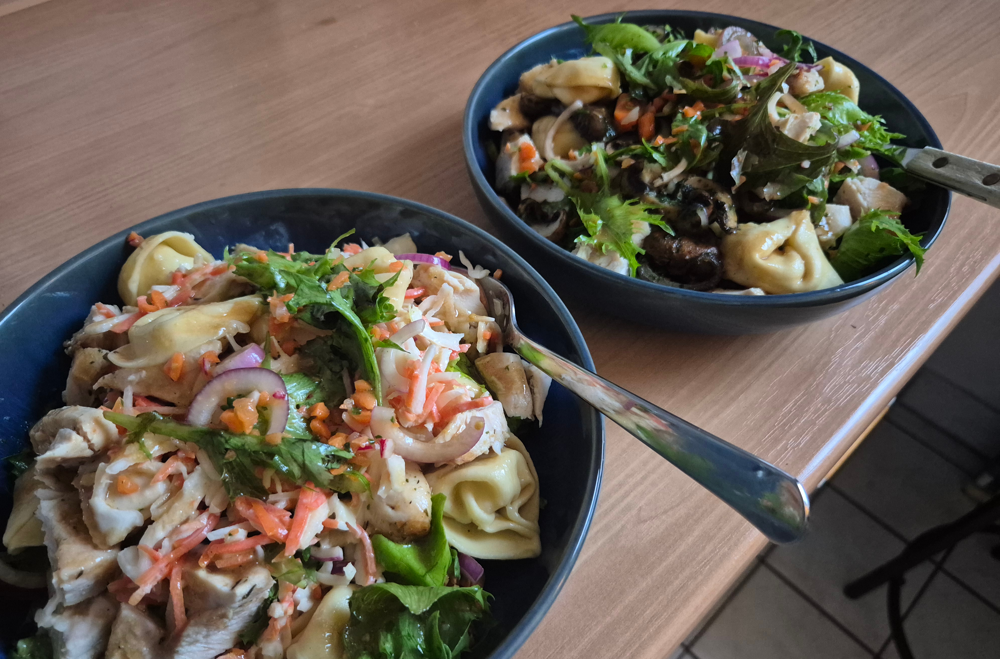

Chicken Salat 🥗

Beschreibung
Ein frischer und protein-reicher Salat mit saftigem Hähnchenfleisch - perfekt für eine gesunde und sättigende Mahlzeit. Knackiges Gemüse trifft auf zarte Hähnchenstreifen und wird mit einem leckeren Dressing abgerundet. Ideal als Lunch oder leichtes Abendessen!
Zutaten 🛒
Für den Salat:
- 2 Hähnchenbrustfilets (ca. 400g)
- 200g gemischte Salatblätter
- 1 Gurke
- 200g Cocktailtomaten
- 1 rote Paprika
- 1 Avocado
- 50g Pinienkerne
- 100g Feta-Käse
- 2 EL Olivenöl (zum Braten)
- Salz und Pfeffer
- 1 TL Paprika (süß)
- 1 TL Thymian (getrocknet)
Für das Dressing:
- 3 EL Olivenöl
- 2 EL Balsamico-Essig
- 1 TL Honig
- 1 TL Senf (mittelscharf)
- 1 Knoblauchzehe (gepresst)
- Salz und Pfeffer nach Geschmack
Zubereitung 👨🍳
- Hähnchen vorbereiten: Hähnchenbrustfilets mit Salz, Pfeffer, Paprika und Thymian würzen.
- Hähnchen braten: Olivenöl in einer Pfanne erhitzen und die Hähnchenbrust von beiden Seiten goldbraun anbraten (ca. 6-8 Min pro Seite). Anschließend ruhen lassen und in Streifen schneiden.
- Gemüse vorbereiten: Gurke und Paprika in mundgerechte Stücke schneiden, Cocktailtomaten halbieren, Avocado in Scheiben schneiden.
- Pinienkerne rösten: Pinienkerne in einer trockenen Pfanne ohne Fett goldbraun rösten (ca. 2-3 Min).
- Dressing zubereiten: Alle Dressing-Zutaten in einem kleinen Gefäß mit einem Schneebesen gut verrühren.
- Salat zusammenstellen: Salatblätter auf Tellern verteilen, Gemüse darauf arrangieren, Hähnchenstreifen hinzugeben.
- Finale: Feta-Käse und geröstete Pinienkerne über den Salat streuen, mit Dressing beträufeln und servieren.
Tipps & Tricks 💡
- Hähnchen-Test: Das Hähnchen ist gar, wenn der Fleischsaft klar austritt
- Salat-Variationen: Probiere Rucola, Spinat oder andere Blattsalate
- Vorbereitung: Hähnchen kann am Vortag gekocht und kalt verwendet werden
- Extra-Protein: Füge hartgekochte Eier oder Kichererbsen hinzu
- Dressing-Tipp: Dressing immer erst kurz vor dem Servieren hinzugeben